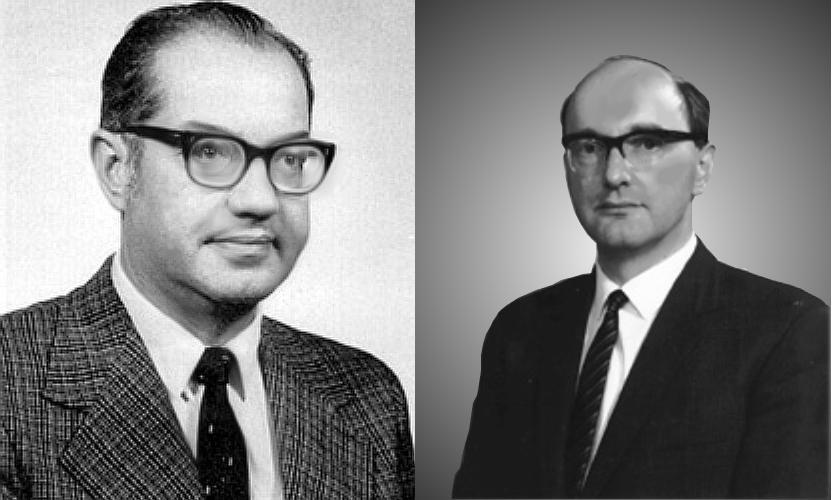
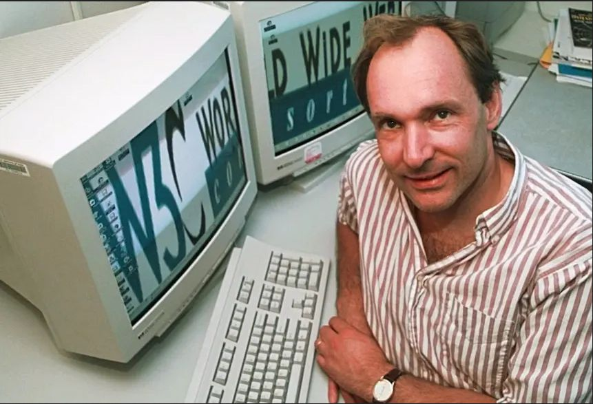

Durante a Guerra Fria, o receio de ataques nucleares levou governos a repensarem a segurança das comunicações estratégicas. O Departamento de Defesa dos Estados Unidos passou a investir em pesquisas que garantissem a continuidade da troca de informações mesmo diante de possíveis interrupções em larga escala.br
Nesse cenário, surgiu a Advanced Research Projects Agency (ARPA) , criada para fomentar inovação tecnológica em áreas críticas. Universidades como a University of California, Los Angeles, o Massachusetts Institute of Technology e a Stanford University passaram a colaborar no desenvolvimento de uma rede capaz de conectar computadores distintos, promovendo comunicação rápida e resiliente.
O principal desafio era conectar sistemas incompatíveis. A solução surgiu com a comutação de pacotes, proposta por Paul Baran e Donald Davies, pioneiros independentes na invenção da comutação de pacotes durante a década de 1960, que dividia as mensagens em pequenos blocos enviados por rotas distintas. Esse modelo tornou a rede mais flexível, eficiente e resistente a falhas.

Paul Baran(Esquerda) e Donald Davies(Direita).A World Wide Web, a Rede de alcance mundial em português ("WWW" ou simplesmente "Web") é um meio de comunicação global no qual utilizadores podem ler e escrever através de computadores conectados à Internet. O termo Web é usado erradamente como sinónimo da própria Internet, sendo a Web apenas um serviço que utiliza a Internet, assim como as mensagens de e-mail; a História da Internet antecede bastante a da Rede de alcance mundial.
O desenvolvimento da World Wide Web até 1991 [nota 1] começou em 1980, quando o inglês Tim Berners-Lee, um funcionário contratado do CERN - Organização Europeia para a Investigação Nuclear, na Suíça, desenvolveu o ENQUIRE, um projeto usado para reconhecer e armazenar associações de informações. Cada nova página no ENQUIRE deveria estar ligada a uma página existente.

Tim Berners-LeeA invenção da Web foi um marco absolutamente revolucionário. Ela permitiu que o cyberspace se tornasse acessível a pessoas comuns, e não apenas a cientistas. Estima-se que hoje a rede conecte mais de 5x109 (cinco bilhões) de pessoas. A comunicação baseada no protocolo IPv4 (e agora IPv6) permite que cada máquina tenha seu endereço único. A Web conectou o mundo de forma irreversível!
| Ano | Acontecimento |
|---|---|
| 1969 | Primeira mensagem enviada via ARPANET. |
| 1989 | Tim Berners-Lee propõe a criação da World Wide Web. |
| 1991 | O primeiro website da história vai ao ar. |
| A partir dos anos 2000, inicia-se a era da Web 2.0 (Redes Sociais). | |